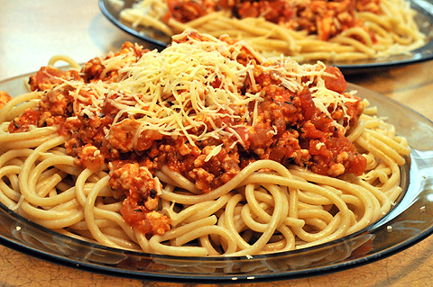

Najpopularniejszy przepis
Spagetti po bolońsku
 Składniki:- 500 g makaronu spaghetti
- ok. 350 g mielonego mięsa drobiowego
- 1 puszka pokrojonych pomidorów w zalewie z ziołami
- 1 cebula
- 4 pieczarki
- ok. 100 g startego sera (parmezanu)
- olej, sól, pieprz, tymianek, oregano
Sposób przygotowania:
Cebulę obrać, drobno posiekać, podsmażyć na rozgrzanym oleju. Pieczarki umyć obrać, zetrzeć na tarce i dodać do cebuli. Włożyć mięso. Chwilę razem smażyć. Dodać pomidory wraz z zalewą. Dalej dusić ok. 20 minut, aż sos nieco się zagęści. Doprawić do smaku solą, pieprzem oraz ziołami (jeżeli sos wyszedł za gęsty dolej wody i dodaj łyżkę przecieru pomidorowego).
Makaron ugotować w osolonym wrzątku (po dodaniu łyżki oleju, makaron nie będzie się kleił), odcedzić. Wyłożyć na talerze, polać sosem i posypać serem.